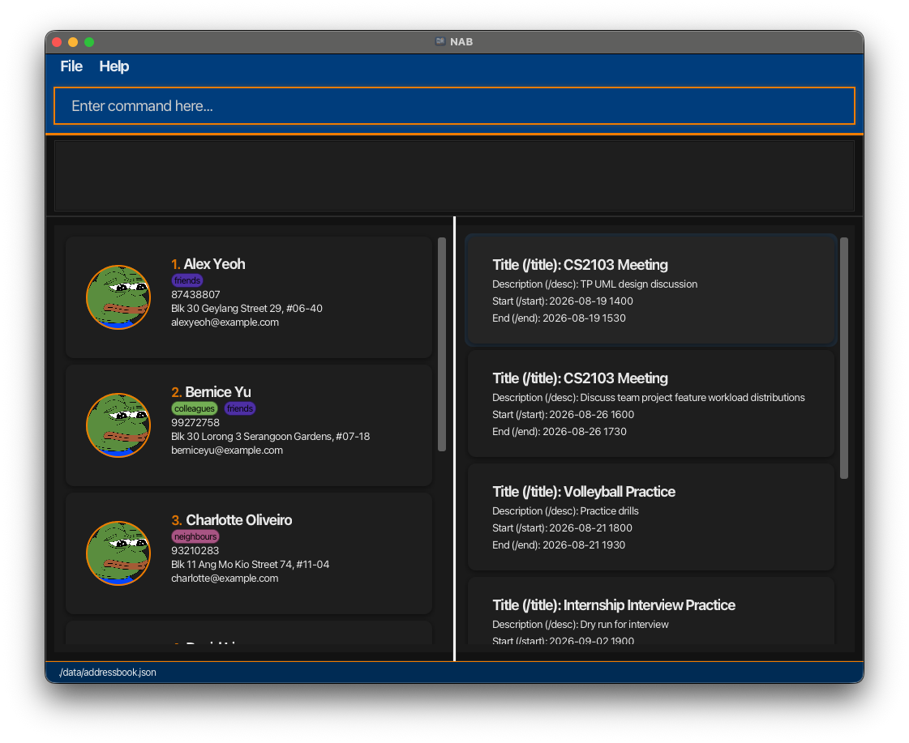
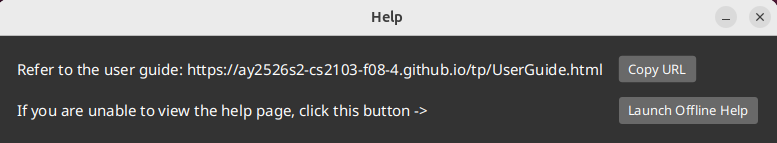

All your NUS connections, right at your fingertips
NUS Address Book (NAB) is a desktop application built for NUS students to manage contacts across multiple modules, project groups, and CCAs with eases. It is optimized for use via a Command Line Interface (CLI) while still having the benefits of a Graphical User Interface (GUI). If you can type fast, NAB can help you organize and retrieve context-specific contacts and track events faster than traditional GUI apps.
Here is how NAB can make student networking easier:
This section provides a quick overview of how this guide is structured, so you can easily find the information you need and understand the notation used throughout.
This guide is for NUS students who want to use NAB to manage contacts and related events efficiently.
Whether you are new to NAB or just looking for a specific command, this guide is organised to help you find what you need quickly.
| Looking to… | Head to… |
|---|---|
| Set up NAB for the first time | Quick Start |
| Check command syntax and usage rules | Features |
| Find a command quickly while using NAB | Command summary |
Ensure you have Java 17 or above installed on your computer.
Mac users: Ensure you have the precise JDK version prescribed here.
Download the latest .jar file from here.
Copy the file to the folder you want to use as the home folder for your AddressBook.
Open a command terminal, cd into the folder you put the jar file in, and use the java -jar NAB.jar command to run the application.
A GUI similar to the below should appear in a few seconds. Note how the app contains some sample data.

Type the command in the command box and press Enter to execute it.
e.g. typing help and pressing Enter will open the help window.
Some example commands you can try:
list : Lists all contacts.
add n/John Doe p/98765432 e/johnd@example.com a/John street, block 123, #01-01 : Adds a contact named John Doe to the address book.
delete n/John Doe : Deletes a contact with name ‘John Doe’ from the address book.
clear : Deletes all contacts.
exit : Exits the app.
Refer to the Features below for details of each command.
Notes about the command format:
Words in UPPER_CASE are the parameters to be supplied by the user.
e.g. in add n/NAME, NAME is a parameter which can be used as add n/John Doe.
Items in square brackets are optional.
e.g n/NAME [t/TAG] can be used as n/John Doe t/friend or as n/John Doe.
Items with ... after them can be used multiple times including zero times.
e.g. [t/TAG]... can be used as (i.e. 0 times), t/friend, t/friend t/family etc.
Parameters can be in any order.
e.g. if the command specifies n/NAME p/PHONE_NUMBER, p/PHONE_NUMBER n/NAME is also acceptable.
Extraneous parameters for commands that do not take in parameters (such as help, list, exit and clear) will be ignored.
e.g. if the command specifies help 123, it will be interpreted as help.
Tags are case-insensitive. t/Friends and t/friends are treated as 1 unique tag. Multiple use of the same tags with different case sensitivity should not be used.
e.g find n/John Doe t/Friends t/friends
If you are using a PDF version of this document, be careful when copying and pasting commands that span multiple lines as space characters surrounding line-breaks may be omitted when copied over to the application.
Managing Profile Pictures
When using the pfp/PHOTO_PATH parameter in commands like add and edit, please note:
.png, .jpg, and .jpeg.PHOTO_PATH can be absolute (e.g., C:/Users/Alex/Pictures/me.jpg) or relative to the app folder (e.g., images/me.png).data/images/ directory.
Parameter Constraints & Formats
Throughout this guide, various commands require specific parameters.
Unless stated otherwise, please ensure your inputs adhere to the following rules:
NAME
PHONE_NUMBER
EMAIL
local-part@domain.+, _, ., and -. It cannot start or end with a special character..).
-), but no other special characters.ADDRESS
#, _, , (comma), and - (hyphen).TAG
-), and underscores (_).PHOTO_PATH
.png, .jpg, or .jpeg..PNG is also accepted).
Press ↑ (Up arrow) or ↓ (Down arrow) while in the command box to navigate through previously entered commands for the current session.
Click on any contact card to copy that contact’s information to your clipboard.
The copied text includes the following fields (optional fields that are not present are omitted):
Each field is placed on a separate line.
helpShows a message explaining how to access the help page.

Format: help
addAdds a person to the address book.
Format: add n/NAME p/PHONE_NUMBER [e/EMAIL] [a/ADDRESS] [t/TAG]... [pfp/PHOTO_PATH]
Tip: Can associate 0 or more tags during the add process
Examples:
add n/John Doe p/98765432 e/johnd@example.com a/John street, block 123, #01-01add n/Betsy Crower t/friend e/betsycrowe@example.com a/Newgate Prison p/1234567 t/criminaladd n/Kim Chaewon p/67676969 pfp/C:\Users\User\Desktop\Photos\Le_sserafim.jpgadd n/Hibiscus p/12345678 t/enemy pfp//home/Desktop/Pictures/hibiscus_flower.pnglistShows a list of all persons in the address book.
Format: list
editEdits an existing person in the address book.
Format: edit n/NAME [p/PHONE_NUMBER] [e/EMAIL] [a/ADDRESS] [t/TAG]... -- [n/NAME] [p/PHONE_NUMBER] [e/EMAIL] [a/ADDRESS] [t/TAG]... [pfp/PHOTO_PATH]
Tip: If there are multiple contacts with the same NAME, utilize the other optional parameters to narrow down the updating of the correct contact. This can be done by supplying any of the following information just after edit n/NAME: Phone number, Email, Address or Tag.
-- identifies which contact to edit.-- specifies fields to be updated.
n/NAME, p/PHONE_NUMBER, e/EMAIL, a/ADDRESS, t/TAG, pfp/PHOTO_PATH.n/NAME in the target segment is required.t/TAG in the updated field.t/ without specifying any tags after it.Examples:
edit n/John Doe -- p/91234567 e/johndoe@example.com edits John Doe’s phone and email.edit n/John Doe p/98765432 -- n/Johnathan Doe t/teammate uniquely identifies John Doe by phone, then updates name and tags.edit n/Betsy Crower -- t/ clears all tags for Betsy Crower.edit n/Alex Yeoh -- pfp/C:/Users/Alex/Pictures/profile.jpg updates Alex Yeoh’s profile picture.findFinds persons who match the given contact information.
Format: find n/NAME [p/PHONE_NUMBER] [e/EMAIL] [a/ADDRESS] [t/TAG]...
Tip: If there are multiple contacts with the same NAME, utilize the other optional parameters to narrow down the
search to a specific contact. This can be done by supplying any of the following information just after find n/NAME: Phone number, Email, Address or Tag.
hans will match Hans.Han will not match Hans.Examples:
find n/John returns contacts named Johnfind n/John t/cs2106 returns contacts named John with tag cs2106filterFinds persons with the given tag(s).
Format: filter t/TAG[, TAG]...
friend will match Friend tag.frie will not match friend tag.Examples:
filter t/friends finds all contacts that are tagged friendsfilter t/cs2103, cs2105, cs2109s finds all contacts that have any of these tags.pinPins the person identified by their name.
Format: pin n/NAME [p/PHONE_NUMBER] [e/EMAIL] [a/ADDRESS] [t/TAG]...
list command is used.NAME is case-insensitive. e.g. aLeX YeOH will match Alex Yeoh.Alex Yeo will not match Alex Yeoh.Examples:
pin n/John Doe pins John Doe when the name uniquely identifies the contact.pin n/John Doe p/91234567 pins the matching John Doe contact by name and phone number.unpinUnpins the person identified by their name.
Format: unpin n/NAME [p/PHONE_NUMBER] [e/EMAIL] [a/ADDRESS] [t/TAG]...
NAME is case-insensitive. e.g. aLeX YeOH will match Alex Yeoh.Alex Yeo will not match Alex Yeoh.Examples:
unpin n/John Doe unpins John Doe when the name uniquely identifies the contact.unpin n/John Doe p/91234567 unpins the matching John Doe contact by name and phone number.tagAssigns one or more tags to one or more contacts in one command.
Format: tag label/TAG_TO_ASSIGN [label/TAG_TO_ASSIGN]... n/NAME [p/PHONE_NUMBER] [e/EMAIL] [a/ADDRESS] [t/TAG]... [n/NAME [p/PHONE_NUMBER] [e/EMAIL] [a/ADDRESS] [t/TAG]...]...
Tip: Use optional fields immediately after each n/NAME to disambiguate contacts with the same name.
How it works:
label/... are the tags that will be assigned to all specified contacts.n/NAME.n/NAME apply only to that contact segment.label/...) and person segments (n/...) cannot be mixed.
All label/... entries must appear before the first n/....Examples:
tag label/CS2103 label/CS2030S n/Alice n/BobAlice and Bob, an enriched search would be tag label/CS2103 label/CS2030S n/Alice p/81234567 n/Bob a/Clementi,
where Alice has a phone number of 81234567 and Bob has an address of Clementi.deleteDeletes the specified person from the address book.
Format: delete n/NAME [p/PHONE_NUMBER] [e/EMAIL] [a/ADDRESS] [t/TAG]...
Tip: If there are multiple contacts with the same NAME, utilize the other optional parameters to narrow down the
deletion of the correct contact. This can be done by supplying any of the
following information just after delete n/NAME: Phone number, Email, Address or Tag.
NAME is case-insensitive. e.g. aLeX YeOH will match Alex Yeoh.Alex Yeo will not match Alex Yeoh.Examples:
delete n/Alex Yeoh deletes the contact with a matching name.Alex Yeoh, an enriched search would be delete n/Alex Yeoh t/cs2103 t/cs2105clearClears all entries from the address book.
Format: clear
event addCreates a new event for a specified person.
Format: event add title/TITLE [desc/DESCRIPTION] start/START_DATE end/END_DATE to/NAME [p/PHONE_NUMBER] [e/EMAIL] [a/ADDRESS] [t/TAG]...
Tip: If there are multiple contacts with the same NAME, utilize the other optional parameters to narrow down the
creation of event for the correct contact. This can be done by supplying any of the
following information just after event ... to/NAME: Phone number, Email, Address or Tag.
NAME is case-insensitive. e.g. aLeX YeOH will match Alex Yeoh.Alex Yeo will not match Alex Yeoh.YYYY-MM-DD HHmm or DD-MM-YYYY HHmm.Examples:
event add title/CS2109S Meeting desc/Final discussion on problem set 1 start/2026-03-25 0900 end/2026-03-25 1000 to/David Li adds an event to David Li.David Li, an enriched search would be event add title/CS2109S Meeting desc/Final discussion on problem set 1 start/2026-03-25 0900 end/2026-03-25 1000 to/David Li p/99272758event viewViews all events for a specified person.
Format: event view n/NAME [p/PHONE_NUMBER] [e/EMAIL] [a/ADDRESS] [t/TAG]...
Tip: If there are multiple contacts with the same NAME, utilize the other optional parameters to
view the events of the correct contact. This can be done by supplying any of the
following information just after event view n/NAME: Phone number, Email, Address or Tag.
NAME is case-insensitive. e.g. aLeX YeOH will match Alex Yeoh.Alex Yeo will not match Alex Yeoh.Examples:
event view n/Bernice Yu views all events that Bernice Yu has.Bernice Yu, an enriched search would be event view n/Bernice Yu e/berniceyu@example.comevent deleteDeletes an event for a specified person.
Format: event delete title/TITLE start/START_DATE end/END_DATE n/NAME [p/PHONE_NUMBER] [e/EMAIL] [a/ADDRESS] [t/TAG]...
Tip: If there are multiple contacts with the same NAME, utilize the other optional parameters to narrow down the
deletion of event for the correct contact. This can be done by supplying any of the
following information just after event ... n/NAME: Phone number, Email, Address or Tag.
NAME is case-insensitive. e.g. aLeX YeOH will match Alex Yeoh.Alex Yeo will not match Alex Yeoh.YYYY-MM-DD HHmm or DD-MM-YYYY HHmm.Examples:
event delete title/Meeting start/2026-03-12 1100 end/2026-04-12 2359 n/David Li deletes the event that titled Meeting which starts at 12 March 2026 1100 and ends at 12 April 2026 2359 assigned to David Li.David Li, an enriched search would be event delete title/Meeting start/2026-03-12 1100 end/2026-04-12 2359 n/David Li p/99272758exitExits the program.
Format: exit
exportExports contacts from NAB into a CSV file.
Format: export t/EXPORT_TYPE f/FILENAME
EXPORT_TYPE specifies which contacts to export:
all exports every contact in NABcurrent exports only the contacts currently shown in the contact listFILENAME specifies the name of the exported file.
Enter the file name without .csv, as NAB automatically appends the .csv extension for you.
For example, f/backup creates a file named backup.csv.Examples:
export t/all f/save_file exports all contacts in NAB to save_file.csvexport t/current f/save_file exports only the currently displayed contacts to save_file.csvimportImports contacts from a CSV file into NAB.
Format: import t/IMPORT_TYPE f/FILENAME
IMPORT_TYPE specifies how the CSV data should be applied:
add adds the imported contacts to the current address bookoverwrite replaces the current address book with the imported contactsFILENAME specifies the name of the CSV file to import.
Enter the file name without .csv, as NAB automatically looks for the file with the .csv extension.
For example, f/save_file tells NAB to import from save_file.csv.Examples:
import t/overwrite f/save_file imports contacts from save_file.csv and replaces the current address bookimport t/add f/save_file imports contacts from save_file.csv and adds them to the current address bookAddressBook data are saved in the hard disk automatically after any command that changes the data. There is no need to save manually.
AddressBook data are saved automatically as a JSON file [JAR file location]/data/addressbook.json. Advanced users are welcome to update data directly by editing that data file.
Caution:
If your changes to the data file makes its format invalid, AddressBook will discard all data and start with an empty data file at the next run. Hence, it is recommended to take a backup of the file before editing it.
Furthermore, certain edits can cause the AddressBook to behave in unexpected ways (e.g., if a value entered is outside the acceptable range). Therefore, edit the data file only if you are confident that you can update it correctly.
Q: How do I transfer my data to another computer?
A: Install the app in the other computer and overwrite the empty data file it creates with the file that contains the data of your previous AddressBook home folder.
preferences.json file created by the application before running the application again.help command (or use the Help menu, or the keyboard shortcut F1) again, the original Help Window will remain minimized, and no new Help Window will appear. The remedy is to manually restore the minimized Help Window.| Action | Format, Examples |
|---|---|
| Add | add n/NAME p/PHONE_NUMBER [e/EMAIL] [a/ADDRESS] [t/TAG]... [pfp/PHOTO_PATH] e.g., add n/James Ho p/22224444 e/jamesho@example.com a/123, Clementi Rd, 1234665 t/friend t/colleague pfp/images/james.jpg |
| Clear | clear |
| Delete | delete n/NAME [p/PHONE_NUMBER] [e/EMAIL] [a/ADDRESS] [t/TAG]...e.g., delete n/Alex Yeoh t/cs2103 t/cs2105 |
| Edit | edit n/NAME [p/PHONE_NUMBER] [e/EMAIL] [a/ADDRESS] [t/TAG]... -- [n/NAME] [p/PHONE_NUMBER] [e/EMAIL] [a/ADDRESS] [t/TAG]... [pfp/PHOTO_PATH]e.g., edit n/James Lee e/jameslee@example.com -- t/CS2100 pfp/images/james.jpg |
| Event Add | event add title/TITLE [desc/DESCRIPTION] start/START_DATE end/END_DATE to/NAME [p/PHONE_NUMBER] [e/EMAIL] [a/ADDRESS] [t/TAG]...e.g., event add title/CS2109S Meeting desc/Final discussion on problem set 1 start/2026-03-25 0900 end/2026-03-25 1000 to/David Li |
| Event Delete | event delete title/TITLE start/START_DATE end/END_DATE n/NAME [p/PHONE_NUMBER] [e/EMAIL] [a/ADDRESS] [t/TAG]...e.g., event delete title/Meeting start/2026-03-12 1100 end/2026-04-12 2359 n/David Li |
| Event View | event view n/NAME [p/PHONE_NUMBER] [e/EMAIL] [a/ADDRESS] [t/TAG]...e.g., event view n/Bernice Yu |
| Exit | exit |
| Filter | filter t/TAG[, TAG]...e.g., filter t/friends |
| Pin | pin n/NAME [p/PHONE_NUMBER] [e/EMAIL] [a/ADDRESS] [t/TAG]...e.g., pin n/John Doe p/91234567 |
| Unpin | unpin n/NAME [p/PHONE_NUMBER] [e/EMAIL] [a/ADDRESS] [t/TAG]...e.g., unpin n/John Doe p/91234567 |
| Find | find n/NAME [p/PHONE_NUMBER] [e/EMAIL] [a/ADDRESS] [t/TAG]...e.g., find n/James Jake p/67676969 |
| Help | help |
| List | list |
| Tag | tag label/TAG_TO_ASSIGN [label/TAG_TO_ASSIGN]... n/NAME [p/PHONE_NUMBER] [e/EMAIL] [a/ADDRESS] [t/TAG]... [n/NAME ...]...e.g., tag label/CS2103 label/CS2030S n/Alice n/Joe t/Family |
| Export | export t/EXPORT_TYPE f/FILENAMEe.g., export t/all f/save_file |
| Import | import t/IMPORT_TYPE f/FILENAMEe.g., import t/overwrite f/save_file |